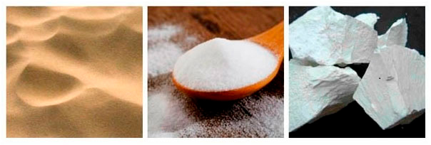

instagram.com/real.glasso
instagram.com/real.glasso
- real.glasso@gmail.com
- Пн - Сб: 9:00 - 19:00
 (066) 555-44-77
(066) 555-44-77- (098) 555-44-77
instagram.com/real.glasso
(066) 555-44-77(098) 555-44-77Скло складається з кварцового піску приблизно на 70%, а також до складу входить сода і вапно. Вапняні домішки надають склу блиск і стійкість до хімічних впливів.
Переплавити бите скло на нові вироби на 40% дешевше, ніж зробити нове скло з первинної сировини. Тому все викинуті скляні вироби відправляються на переробку і переплавку. До того ж скло це один з небагатьох матеріалів, які можуть бути перероблені на 100% не втрачаючи своїх якостей.
Коли розбивається скло, тріщина поширюється зі швидкістю 4828 км/год. Таку швидкість неможливо помітити звичайним поглядом, тільки за допомогою високошвидкісної зйомки.